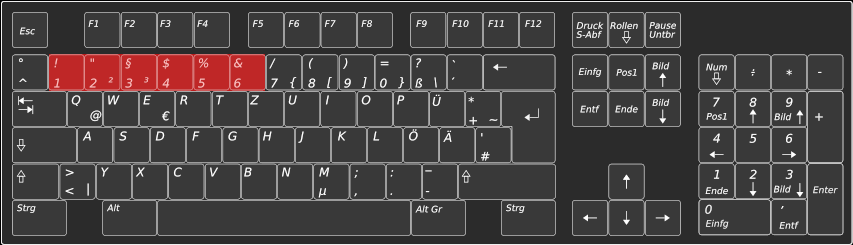
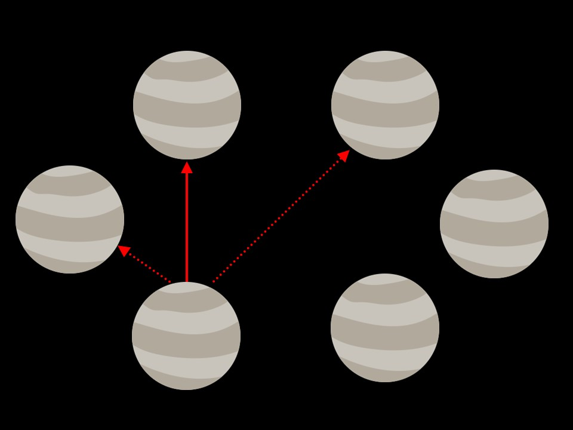
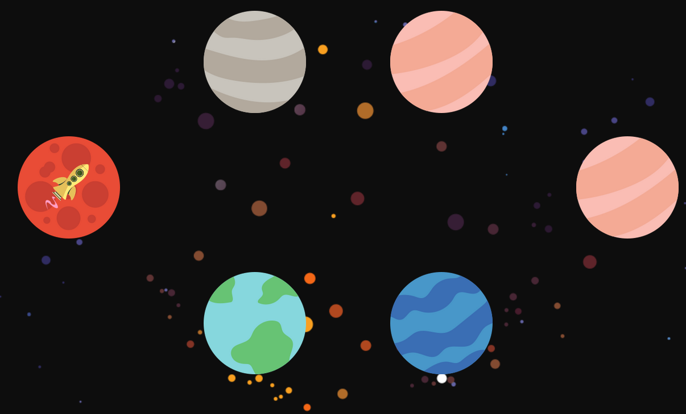
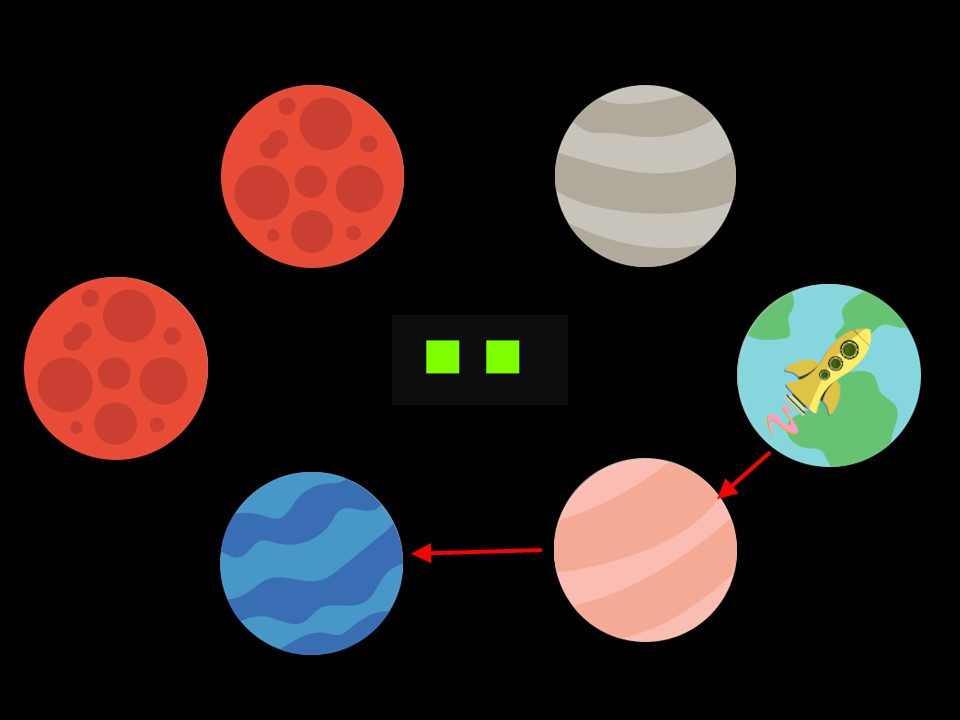

Ihr Weltraumabenteuer kann nun beginnen.
Drücken Sie rechte Pfeiltaste, um zu beginnen.
Hallo Abenteurer!
Willkommen beim Weltraumabenteuer-Spiel!
Heute haben Sie die Gelegenheit an einer Reise durch den Weltraum teilzunehmen.
In der folgenden Übung werden Sie alles lernen, was Sie dafür wissen müssen.
Bevor es losgeht, werden Sie lernen, wie Sie im Weltraum reisen können.
Drücken Sie auf Ihrer Tastatur die rechte Pfeiltaste, um fortzufahren oder die linke Pfeiltaste, um eine Seite zurückzugehen.
Sie werden durch viele verschiedene Planetensysteme reisen!
Jedes dieser Systeme besteht aus 6 Planeten.
Drücken Sie die rechte Pfeiltaste, um fortzufahren oder die linke Pfeiltaste um eine Seite zurückzugehen.
Ein Raumschiff zeigt Ihnen zu jedem Zeitpunkt Ihre aktuelle Position an.
Drücken Sie die rechte Pfeiltaste, um fortzufahren oder die linke Pfeiltaste, um eine Seite zurückzugehen.
Um im Weltraum reisen zu können, müssen Sie möglichst viel Treibstoff sammeln, indem Sie von Planet zu Planet fliegen.
Es gibt dabei verschiedene Arten von Planeten.
Einige Planeten liefern Ihnen Treibstoff, wenn Sie darauf landen.
Auf anderen Planeten werden Sie Treibstoff verlieren, wenn Sie darauf landen.
Damit Sie nicht den Überblick über die Menge des verfügbaren Treibstoffes verlieren,
zeigt der Balken am oberen Bildschirmrand Ihren aktuellen Treibstoffstand an.
Ein Beispielbild können Sie auf der nächsten Seite sehen.
Wenn Ihr Treibstoffstand gefährlich absinkt, färbt sich der Balken rot.
Drücken Sie die rechte Pfeiltaste, um fortzufahren oder die linke Pfeiltaste, um eine Seite zurückzugehen.
Drücken Sie die rechte Pfeiltaste, um fortzufahren oder die linke Pfeiltaste um eine Seite zurückzugehen.
Nun werden Sie lernen, wie Sie von Planet zu Planet fliegen können.
Sie können direkt benachbarte Planeten erreichen, indem Sie die 'M'-Taste auf Ihrer Tastatur drücken.
Sie können weiter entfernte Planeten (d.h. nicht direkt benachbarte Planeten) mit einem Sprung erreichen, indem Sie die 'Y'-Taste drücken.
Hinweis: Falls Sie keine deutsche Tastatur haben sollten, befindet sich an der Stelle der 'Y'-Taste, die 'Z'-Taste. Bitte verwenden Sie dann diese Taste.
Drücken Sie die rechte Pfeiltaste, um fortzufahren oder die linke Pfeiltaste, um eine Seite zurückzugehen.
Im Folgenden wird Ihnen alles genauer erklärt. Jetzt wird Ihnen gezeigt,
wie Sie zu Planeten fliegen können und Sie üben die dazu notwendigen Kommandos.
Zuerst schauen wir uns an, was passiert, wenn Sie die 'M'-Taste wählen.
Ein Tastendruck auf die 'M'-Taste ermöglicht es Ihnen, im Uhrzeigersinn zum nächsten
benachbarten Planeten zu reisen.
Sie werden dieses Kommando nun einige Male ausprobieren,
indem Sie wiederholt die 'M'-Taste drücken und so zum jeweils nächsten benachbarten Planeten fliegen.
Bitte benutzen Sie Ihren rechten Zeigefinger.
Drücken Sie die rechte Pfeiltaste, um fortzufahren oder die linke Pfeiltaste, um eine Seite zurückzugehen.
-2
Bitte 'M' drücken
Nun lernen Sie was passiert, wenn Sie die 'Y'-Taste drücken.
Nächste Instruktionen werden automatisch gezeigt, kein Tastendruck notwendig.
Ein Tastendruck auf die 'Y'-Taste ermöglicht es Ihnen, zu 'springen' und damit zu einem bestimmten nicht-benachbarten,
weiter entfernten Planeten zu fliegen.
Sie können bei einem Sprung von einem bestimmten Startplaneten aus
also nicht jeden beliebigen, sondern nur einen bestimmten weiter entfernteren Planeten erreichen.
Als nächstes können Sie ausprobieren, was an jeder Planetenposition passiert,
wenn Sie 'Sprung' ('Y'-Taste) wählen und zu welchem Planeten Sie damit springen können.
Merken Sie sich bitte genau, auf welchen Planeten Sie von einer bestimmten Position aus springen können.
Es ist sehr wichtig, dass Sie sich das Sprungmuster des Raumschiffs gut einprägen!
Das Sprungmuster ist wichtig für Ihre Reiseplanung.
Bitte benutzen Sie Ihren linken Zeigefinger.
Drücken Sie die rechte Pfeiltaste, um fortzufahren.
Bitte 'Y' drücken
Hier sehen Sie das Sprungmuster noch einmal als Ganzes.
Bitte prägen Sie es sich jetzt gut ein.
Hinweis: Bitte zeichnen Sie das Muster nicht auf und fotografieren Sie es nicht.
Sie werden das Sprungmuster im Folgenden erneut üben können.
Drücken Sie die rechte Pfeiltaste, um fortzufahren.
Um Ihnen zu helfen, das Muster noch mehr zu verinnerlichen, machen Sie jetzt eine kleine Übung.
Ihnen werden nun verschiedene Startpositionen vorgegeben.
Sie können mit den Tasten 1-6 in der Nummernzeile Ihrer Tastatur angeben, auf welchem Zielplaneten Sie Ihrer Meinung nach landen werden,
wenn Sie einen Sprung ('Y'-Taste) durchführen.
Diese Übung wird fortgesetzt, bis Sie ausreichend korrekte Antworten gegeben haben.
Anschließend bekommen Sie eine Rückmeldung, ob Sie richtig geantwortet haben.
Drücken Sie die rechte Pfeiltaste, um fortzufahren oder die linke Pfeiltaste, um eine Seite zurückzugehen.
Falsch, die richtige Antwort wäre:
Richtig
Bitte 1-6 drücken
1
2
3
4
5
6
Als nächstes lernen Sie die Besonderheiten des Kommandos ‚Sprung‘ kennen.
Wichtige Anmerkung: Im eigentlichen Experiment, welches nach dieser Vorbereitung beginnt,
kann es manchmal passieren, dass Ihr Sprung unzuverlässig ist.
In solchen Fällen verfehlt das Raumschiff den Zielplaneten.
und landet stattdessen auf einem der beiden direkt benachbarten Planeten des Zielplaneten.
Diese Unzuverlässigkeit können Sie nicht beeinflussen
Drücken Sie die rechte Pfeiltaste, um fortzufahren.
Das Bild soll Ihnen noch einmal verdeutlichen, was das bedeutet.
Die durchgezogene rote Linie zeigt den Sprung zum erwarteten Zielplaneten,
die gestrichelten Linien zeigen Ihnen, wo Ihr Raumschiff landen kann, wenn es den Zielplaneten verfehlt.
Drücken Sie die rechte Pfeiltaste, um fortzufahren oder die linke Pfeiltaste, um eine Seite zurückzugehen.
In manchen Planetensystemen befinden sich Asteroiden.
In diesen passiert es besonders häufig, dass Sie den Zielplaneten bei einem Sprung verfehlen.
In den Planetensystemen ohne Asteroiden passiert das im Vergleich viel seltener.
Ob Sie sich in einem Planetensystem mit Asteroiden befinden, können Sie immer am Hintergrundbild erkennen.
Um Ihnen ein Gefühl dafür zu geben, können Sie den Sprung jetzt in beiden Bedingungen (ohne und mit Asteroiden) ausprobieren.
Beachten Sie, dass das bereits bekannte Sprungmuster vom Start- zum Zielplaneten dabei grundsätzlich gleich bleibt
und lediglich weniger zuverlässig ist.
Drücken Sie die rechte Pfeiltaste, um fortzufahren oder die linke Pfeiltaste, um eine Seite zurückzugehen.
Sie fangen nun mit einer Übung in Planetensystemen ohne Asteroiden an.
Hier landen Sie, wenn Sie den Sprung wählen, fast immer auf dem erwarteten Zielplaneten.
Bitte führen Sie nun einige Sprünge durch, indem Sie wiederholt die 'Y'-Taste betätigen.
Drücken Sie die rechte Pfeiltaste, um fortzufahren oder die linke Pfeiltaste, um eine Seite zurückzugehen.
Ziel verfehlt
Jetzt lernen Sie Planetensysteme mit Asteroiden kennen.
In diesen Bedingungen ist das Kommando 'Sprung' hochgradig unzuverlässig und Sie werden den Zielplaneten recht häufig verfehlen.
Um Ihnen auch hierfür ein Gefühl zu geben, können Sie nun auch hier den Sprung ein paar Mal ausprobieren,
indem Sie wiederholt die 'Y'-Taste betätigen.
Beachten Sie, dass auch hier das bereits bekannte Sprungmuster vom Start- zum Zielplaneten gleich bleibt,
aber es viel wahrscheinlicher wird, dass Sie den Zielplaneten verfehlen.
Die jeweilige Wahrscheinlichkeit, mit der Sie Ihren Zielplaneten verfehlen, bleibt über das gesamte Spiel hinweg innerhalb derselben Bedingung (d.h. mit und ohne Asteroiden) gleich.
Das bedeutet, in Planetensystemen ohne Asteroiden ist ein Sprung immer im gleichen Maß zuverlässiger,
während er mit Asteroiden immer im gleichen Maß unzuverlässiger ist.
Das Fliegen im Uhrzeigersinn mit der 'M'-Taste ist hingegen immer zuverlässig.
Drücken Sie die rechte Pfeiltaste, um fortzufahren.
Sie haben bereits gelernt, wie Sie im Weltraum von Planet zu Planet reisen können und welche Reisebedingungen (mit und ohne Asteroiden) es gibt.
Nun werden Sie lernen, wie Sie beim Reisen durch den Weltraum den notwendigen Treibstoff gewinnen oder verlieren können.
Sie können Treibstoff bekommen, wenn Sie zu bestimmten Arten von Planeten fliegen.
Auf anderen Planeten-Arten werden Sie jedoch Treibstoff verlieren.
Ob und wie viele Treibstoff-Punkte Sie erhalten oder verlieren, hängt also davon ab, auf welchem Zielplaneten Sie landen.
Um reisen zu können ist es wichtig, dass Sie versuchen, so viel Treibstoff wie möglich zu sammeln.
Hierzu wird Ihnen im nächsten Schritt gezeigt, welche Planeten gute und welche schlechte Treibstoffquellen sind.
Drücken Sie die rechte Pfeiltaste, um fortzufahren.
Bitte merken Sie sich die Treibstoffkosten bzw. die Treibstoffbelohnung für jeden Planeten:
Drücken Sie die rechte Pfeiltaste, um fortzufahren oder die linke Pfeiltaste, um eine Seite zurückzugehen.
In jedem neuen Planetensystem können Sie immer zu 3 Planeten nacheinander fliegen (3 Flüge) und damit versuchen,
so viel Treibstoff wie möglich zu sammeln.
Die Anzahl der grünen Quadrate in der Mitte des Bildschirms zeigt Ihnen an, wie viele
der 3 verfügbaren Flüge Sie noch übrig haben, bevor es weiter zum nächsten Planetensystem geht.
Ein Beispielbild dafür sehen Sie auf der nächsten Seite.
Drücken Sie die rechte Pfeiltaste, um fortzufahren oder die linke Pfeiltaste, um eine Seite zurückzugehen.
Drücken Sie die rechte Pfeiltaste, um fortzufahren oder die linke Pfeiltaste, um eine Seite zurückzugehen.
Zusammenfassung:
Ihre Aufgabe ist es, möglichst viel Treibstoff zu sammeln, indem Sie von Planet zu Planet reisen.
Sie können immer entweder zum Nachbarplaneten im Uhrzeigersinn reisen ('M'-Taste), oder springen ('Y'-Taste).
Je nachdem auf welchem Planeten Sie landen, gewinnen oder verlieren Sie Treibstoff.
Der blaue Balken am oberen Rand zeigt Ihnen Ihren aktuellen Treibstoffstand an.
Manchmal passiert es beim Springen, dass Sie, statt auf dem erwarteten Zielplaneten,
auf einem seiner Nachbarplaneten landen. Das passiert besonders häufig in Planetensystemen
mit Asteroiden im Hintergrund, kann aber auch (selten) in den anderen Planetensystemen passieren.
Die unterschiedlichen Wahrscheinlichkeiten, wie oft Sie den Zielplaneten verfehlen,
bleiben innerhalb der jeweiligen Bedingung (d.h. mit und ohne Asteroiden) während des gesamten Experimentes gleich.
Drücken Sie die rechte Pfeiltaste, um fortzufahren oder die linke Pfeiltaste, um eine Seite zurückzugehen.
Hier noch ein Hinweis:
Es hilft Ihnen sehr bei der Aufgabe, wenn Sie mehrere Schritte im Voraus planen.
Um dies zu erklären, sehen Sie nun ein Beispiel.
Drücken Sie die rechte Pfeiltaste, um fortzufahren oder die linke Pfeiltaste, um eine Seite zurückzugehen.
Stellen Sie sich vor, Sie befinden sich in der unten angegebenen Situation, und müssen noch zwei Mal weiterfliegen.
Wenn Sie nur einen Schritt im Voraus planen, würden Sie wahrscheinlich direkt zum blauen Planeten springen.
Danach wären Sie jedoch gezwungen, auf einen der roten Planeten zu reisen.

Insgesamt würden Sie dabei 10 Treibstoffeinheiten verlieren (+10 -20)
Die Möglichkeit, bei einem Sprung nicht auf dem richtigen Zielplaneten zu landen, soll in diesem Beispiel keine Rolle spielen.
Drücken Sie die rechte Pfeiltaste, um fortzufahren oder die linke Pfeiltaste, um eine Seite zurückzugehen.
In diesem Planetensystem wäre es also besser gewesen, zunächst eine kleinere Menge Treibstoff-Punkte zu verlieren,
und danach zum blauen Planeten zu reisen.
Insgesamt hätten Sie damit keine Treibstoffeinheiten verloren (-10 +10)
Drücken Sie die rechte Pfeiltaste, um fortzufahren oder die linke Pfeiltaste, um eine Seite zurückzugehen.
Sie werden nun ein paar Mal üben, wie Sie im Planetensystem reisen und Treibstoff-Punkte sammeln.
Dabei sollen Sie bitte versuchen Ihre 3 Reiseschritte innerhalb eines Planetensystems so vorauszuplanen,
dass Sie so viele Treibstoff-Punkte wie möglich erhalten bzw. so wenig Punkte wie möglich verlieren.
Versuchen Sie also bitte insgesamt den bestmöglichen Reiseweg zu planen.
Wir beginnen die Übung mit 2 Reiseschritten.
Bitte drücken Sie die 'M'-Taste, um sich im Uhrzeigersinn zu bewegen, und die 'Y'-Taste,
wenn Sie auf einen entfernteren Planeten springen möchten.
Denken Sie bitte daran: Benutzen Sie für die Sprungtaste ('Y') den linken Zeigefinger
und für die Taste zum Erreichen des Nachbarplaneten ('M') den rechten Zeigefinger.
Drücken Sie die rechte Pfeiltaste, um fortzufahren oder die linke Pfeiltaste, um eine Seite zurückzugehen.
Sehr gut, Sie haben den optimalen Reiseweg gewählt.
'M'-Taste: Im Uhrzeigersinn fliegen
'Y'-Taste: Springen
Es gibt noch eine Route, die noch besser ist. Versuchen Sie es noch einmal.
'M'-Taste: Im Uhrzeigersinn fliegen
'Y'-Taste: Springen
Das war noch nicht die beste Route. Versuchen Sie es noch einmal!
'M'-Taste: Im Uhrzeigersinn fliegen
'Y'-Taste: Springen
Das war noch nicht ganz perfekt..
Drücken Sie die rechte Pfeiltaste, um den besten Reiseweg zu sehen.
Der optimale Reiseweg ist:
Glückwunsch! Sie haben jetzt alles gelernt, was Sie für Ihr Weltraumabenteuer wissen müssen.
Es folgt nun das eigentliche Experiment.
Drücken Sie die rechte Pfeiltaste, um fortzufahren.
Ihr Weltraumabenteuer kann nun beginnen.
Drücken Sie rechte Pfeiltaste, um zu beginnen.
Das Training Spiel ist zu Ende.
Ihre Training Treibstoffreserven sind aufgebraucht.
Ihr Weltraumabenteuer kann nun beginnen.
Drücken Sie die rechte Pfeiltaste, um fortzufahren.
In Kürze erreichen Sie ein neues Planetensystem......
Bitte nehmen Sie sich etwas Zeit zum Ausruhen, falls Sie sich müde fühlen....
Drücken Sie die rechte Pfeiltaste, um fortzufahren.
Ende des Experiments.
Danke für Ihre Teilnahme.
Das Spiel ist zu Ende.
Ihre Treibstoffreserven sind aufgebraucht.
Danke für Ihre Teilnahme